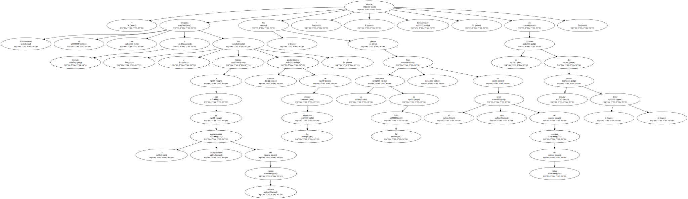
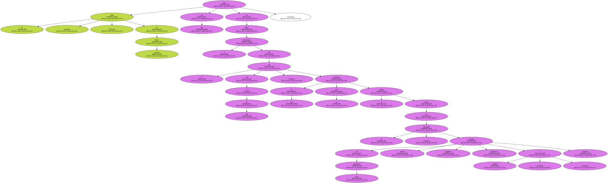
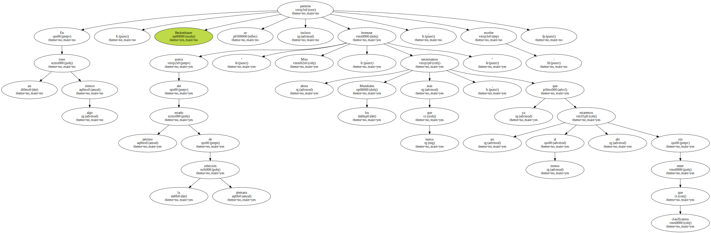

Franz Beckenbauer , máximo responsable federativo para la candidatura alemana al Mundial 2006 , considera que la eliminación de su selección de la Eurocopa 2000 no perjudica las aspiraciones de su país como posible sede de ese campeonato.

" Ultimamente se me pregunta a menudo : ¿ han bajado nuestras posibilidades de obtener los Mundiales a raíz de la decepcionante participación del equipo alemán ? No , porque los miembros de la FIFA se fijan en el alto nivel del conjunto del torneo " , escribe Beckenbauer , en su columna del popular diario " Bild ".
El " kaiser " del fútbol germano trata con ello de calmar el nerviosismo ante la cita del 6 de julio , en que la FIFA anunciará su decisión acerca de los Mundiales , por cuya candidatura compiten también Brasil , Inglaterra , Marruecos y Sudáfrica.
En un tono algo irónico , Beckenbauer se permite incluso bromear acerca del pésimo estado de la selección alemana : " Mira , ahora necesitamos los Mundiales más que nunca , ya que así al menos estaremos ahí sin tener que clasificarnos " , escribe.
La federación alemana , de la que él es vicepresidente , está buscando ahora un sucesor a Erich Ribbeck , quien dimitió como seleccionador tras la humillante eliminación de la Eurocopa en la ronda preliminar y escaso juego ofrecido por su conjunto.